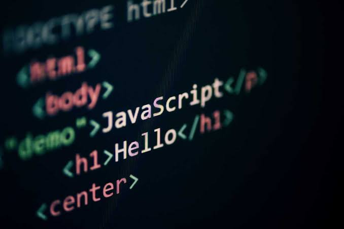

المؤسسة التعليمية: معهد الدلتا العالي لنظم المعلومات الإدارية والمحاسبة بالمنصورة - الفرقة الثانية
اسم الطالبة: شروق صلاح حسنين صلاح الدين المرسي
الرقم الجامعي: 2500943
المادة: تطبيقات الإنترنت والمنصات الإلكترونية

تعد لغة جافاسكريبت (JavaScript) حجر الزاوية في تطوير شبكة الويب الحديثة. فبينما تتولى لغة HTML هيكلة المحتوى وتتكفل لغة CSS بتنسيقه وإبراز مظهر الصفحة، تأتي لغة JavaScript لبث الروح والتفاعلية في صفحات الويب، معيدةً تعريف تجربة المستخدم من مجرد استعراض نصوص وصور ثابتة إلى التفاعل مع تطبيقات برمجية متكاملة وسلسة.
تطور دور JavaScript منذ ظهورها في منتصف التسعينيات من مجرد أداة لإضافة مؤثرات بسيطة إلى لغة برمجية تعتمد عليها أكبر المنصات العالمية. تهدف هذه الدراسة إلى تسليط الضوء على الآليات التي تستخدمها لغة JavaScript لتحويل صفحات الويب الثابتة إلى تطبيقات حية وتفاعلية تتقاطع مع متطلبات المستخدم الحديثة.
تعتمد JavaScript في إحداث التفاعلية على عدة ركائز برمجية ومفاهيم أساسية تمكنها من التواصل مع متصفح الويب واستجابة لسلوكيات المستخدم.
تعتبر الأحداث (Events) النواة الأساسية لتجربة المستخدم التفاعلية. تتفاعل JavaScript مع الأفعال التي يقوم بها المستخدم، مثل:
من خلال آليات سماع الأحداث (addEventListener)، يستطيع المطور ربط وظائف برمجية (Functions) معينة بدوال استجابة تعمل فور وقوع الحدث، مما يعطي إحساساً فورياً بالاستجابة.
تمثل شجرة عناصر المستند (DOM) واجهة برمجة التطبيقات التي تمكن JavaScript من الوصول إلى محتوى HTML وتنسيقات CSS وتعديلها ديناميكياً:
| المفهوم | الوصف البرمجي | التأثير على الصفحة |
|---|---|---|
| Event Handling | التقاط أفعال المستخدم | استجابة فورية بدون تأخير |
| DOM Manipulation | تعديل بنية وشكل HTML/CSS | تغيير محتوى الصفحة ديناميكياً |
| Form Validation | فحص البيانات قبل إرسالها | تحسين جودة البيانات وتقليل الأخطاء |
| AJAX / Fetch API | تبادل البيانات خلف الكواليس | تحديث الجزئيات دون إعادة التحميل |
أصبحت لغة JavaScript القوة المحركة لتطوير واجهات المستخدم التفاعلية على شبكة الويب. من خلال قدرتها على معالجة الأحداث، وإدارة شجرة المستند DOM، والتحقق من المدخلات وجلب البيانات بطرق غير متزامنة، استطاعت نقل صفحات الويب من مجرد وثائق نصية إلى تطبيقات برمجية متكاملة عالية الأداء.